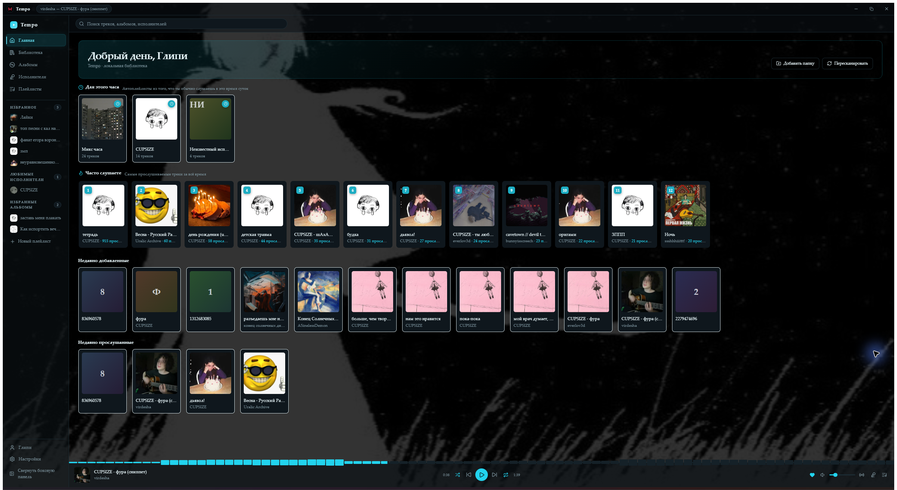
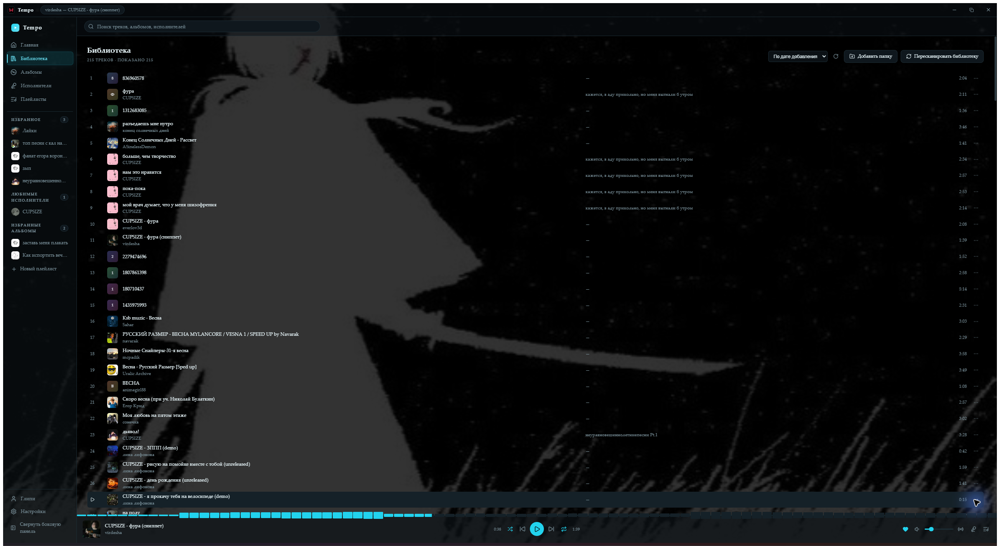
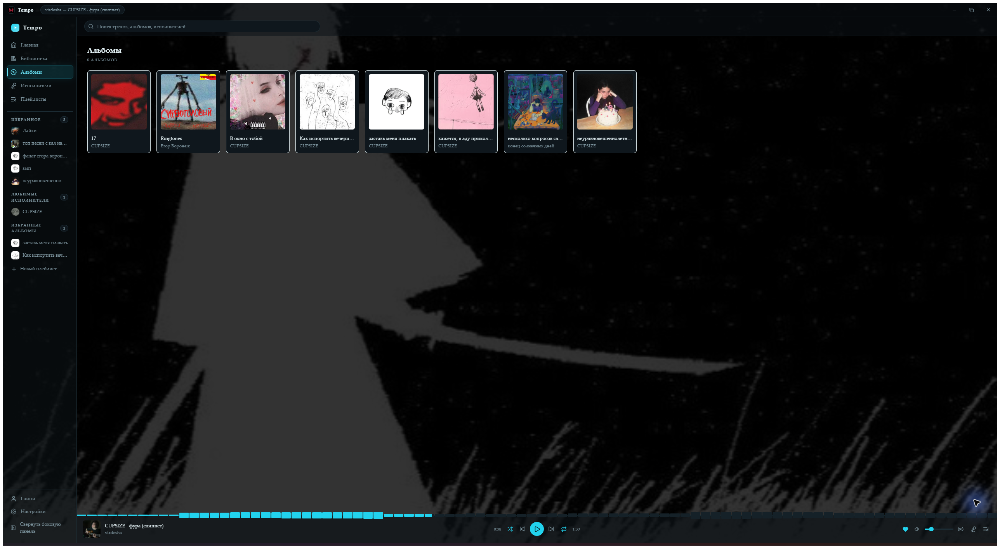
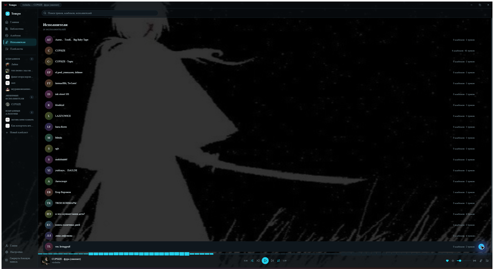
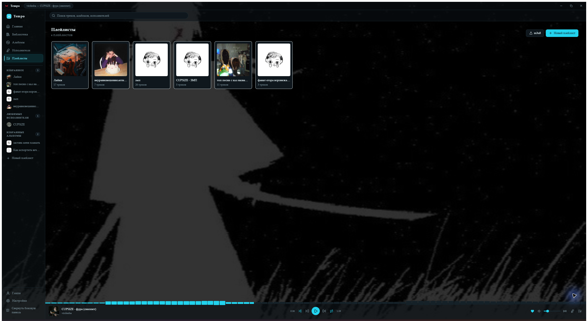
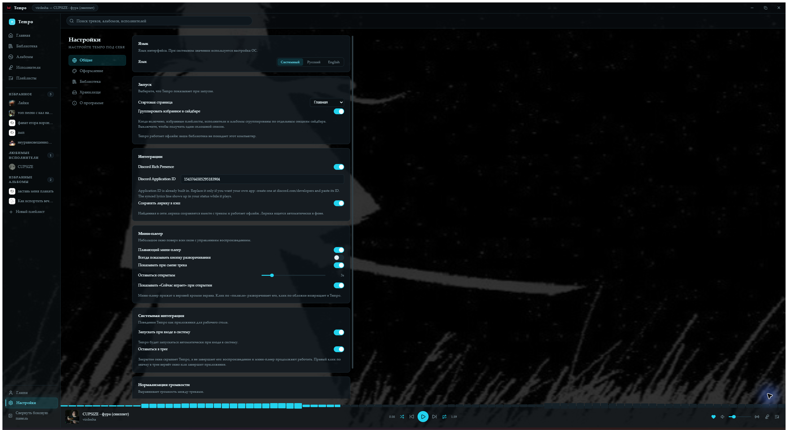

Tempo · музыка в одном месте
Твоя музыка.
Твой ритм.
Локальная коллекция, любимые альбомы и очередь воспроизведения — в одном спокойном пространстве.
01 · главный экран
Начни с любимого
Продолжай слушать с того места, где остановился.

02 · коллекция
Всё звучит вместе
Файлы с компьютера и музыка из сети — одна библиотека.

03 · альбомы и люди
Найди свой звук
Исследуй коллекцию по альбомам и исполнителям.

04 · любимые артисты
Знакомые голоса
Страница исполнителя помогает вернуться к его музыке.

05 · подборки
Собери свой микс
Плейлисты для любого настроения и момента.

06 · под себя
Плеер, который твой
Настрой внешний вид и поведение Tempo.
